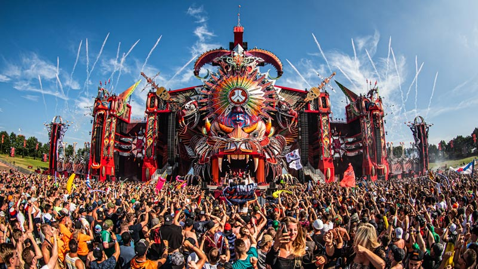
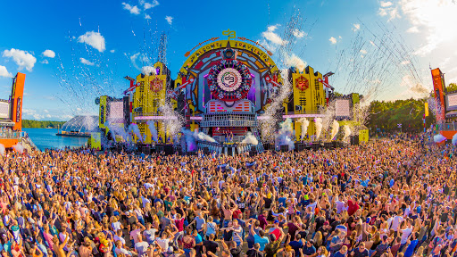
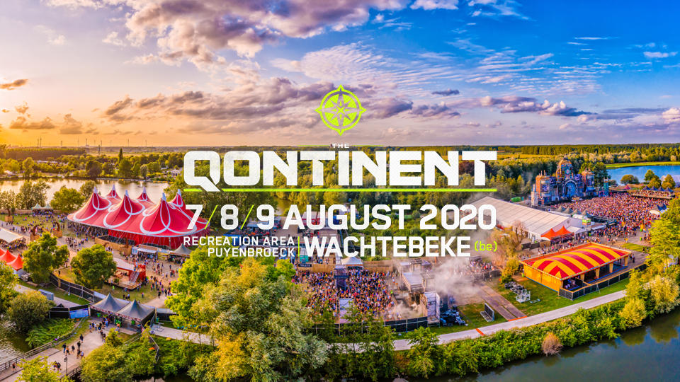
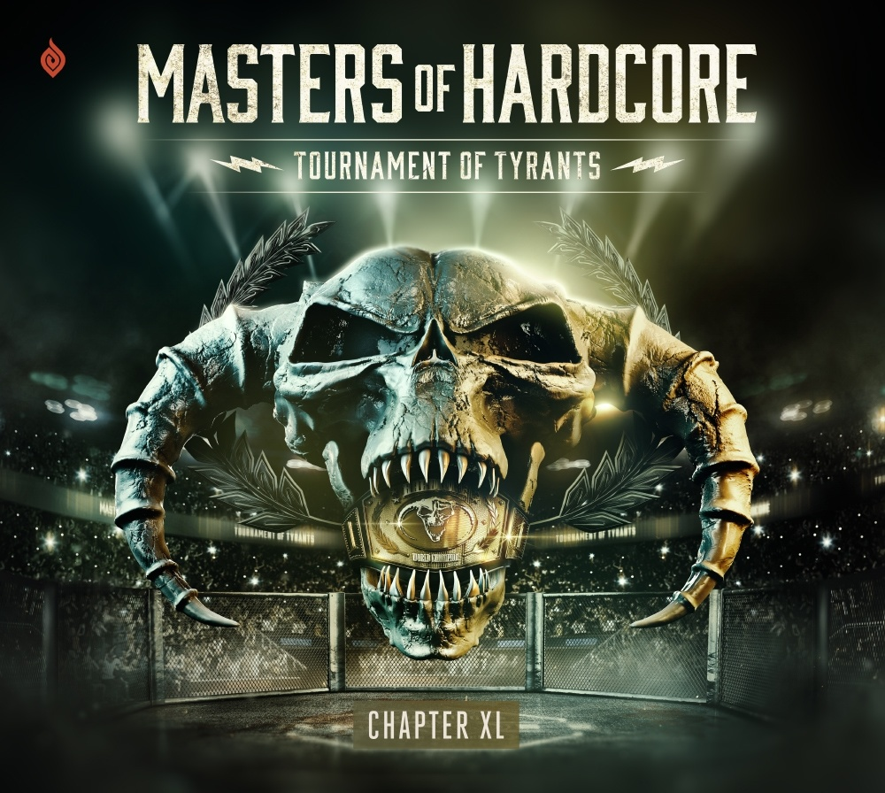
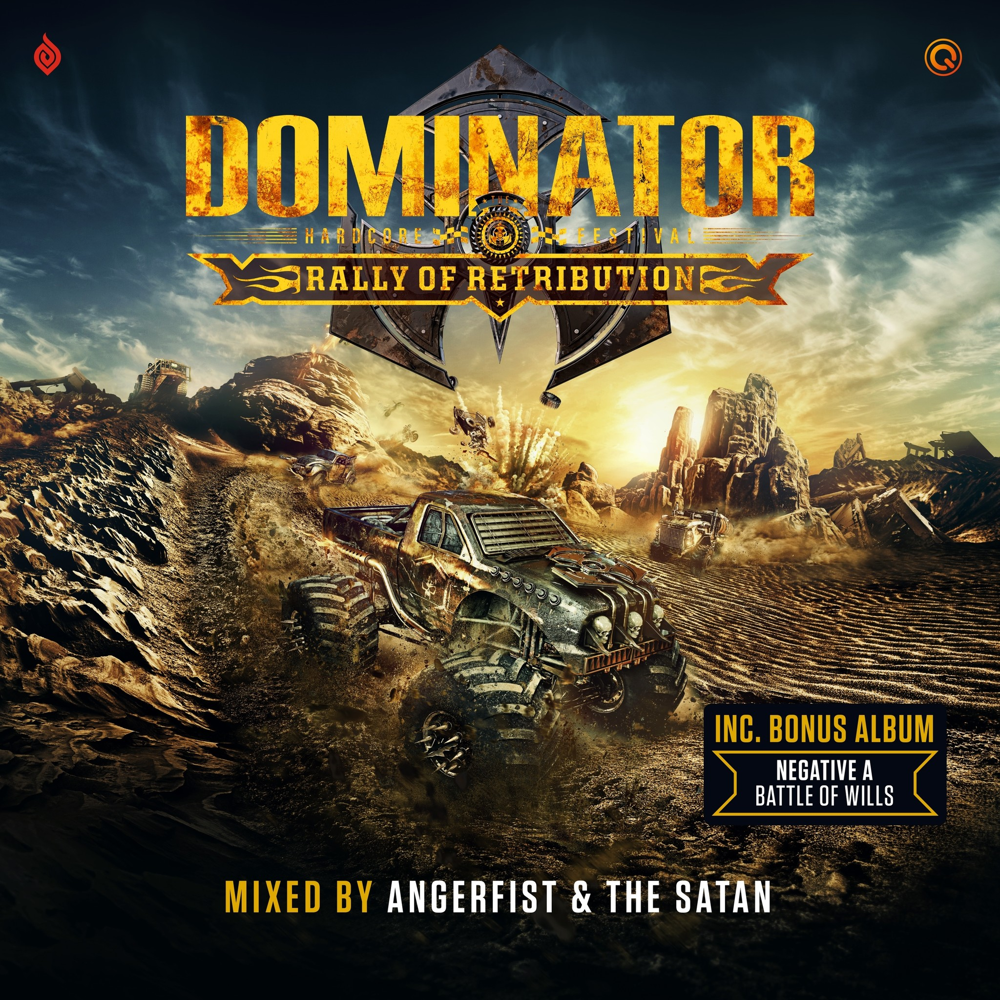

Do you like to discover ? Do you like music ?
Then My Music is for you. The goal of this start-up is to make users discover new styles of music and to offer them a personalized assistance to find the musical events made for them. Welcome to the world of Hardstyle.
Hardstyle is an electronic dance music genre with a tempo of 140-150 BPM. It has influences of both hardcore and house music and the beats per minute lie exactly between these two. Several subgenres have developed over the years, such as raw style and terror. The hard sound of the first years are now often referred to as 'early' hardstyle.
Frenchcore is a musical genre entirely created by computer assistance. It is characterized by a high tempo, usually oscillating between 180 and 240 beats per minute (BPM), composed on a four-beat measure. The genre makes use of instruments with minimalist, industrial, techno and early hardcore orientations. Producers often use voice samples, often in French, taken from films, videos, soundtracks or video games. There are many artists who fit into this genre such as Sefa, Dr. Peacock, Partyraiser, Micropoint, DJ Radium...
Rawstyle is a new subgenus of Dutch Hardstyle. Created around 2011, it takes up the Dutch Hardstyle influenced by Hardcore with darker melodies and adds oldschool and hardcore characteristics, usually with more distortion on the "Kick". It can sometimes be brutal.
Rawstyle can often be very experimental, often using unconventional techniques and methods to achieve a certain sound. It can be found in the works of artists such as D-Sturb, Rejecta, Radical Redemption, Act of Rage...
The Extra-Raw style is a type of Rawstyle which is more of a solo genre. It's much more experimental and more aggressive. It can be found in the works of artists such as Warface, Rooler, Deetox and many others. This type of Rawstyle is normally done with a very deformed kick. It is mainly focused on the punch (the "kick" of a Hardstyle kick) with a much weaker tail than the Hardstyle.
Hardcore refers to a variant of the much more aggressive hardcore style originally from European raves, which emerged during the 1990s. These musical genres generally stand out from other electronic music currents by their greater speed (160 to 200 BPM or more), the intensity of the kicks (often the same) and basses (in some derived music), the rhythm and atmosphere, their themes (sometimes violent), the use of saturation and experiments close to those conceived by the industrial music current.
There are many hardstyle, hardcore, Frenchcore, Raw or Extra-Raw style festivals these days. There is two type of festival : the indoor ones and the outdoor ones two companies that organize the majority of these are B2S and Q-Dance. Here is a list of the most known ones :
Defqon 1
Decibel Outdoor
The Qontinent
Master Of Hardcore
Dominator
